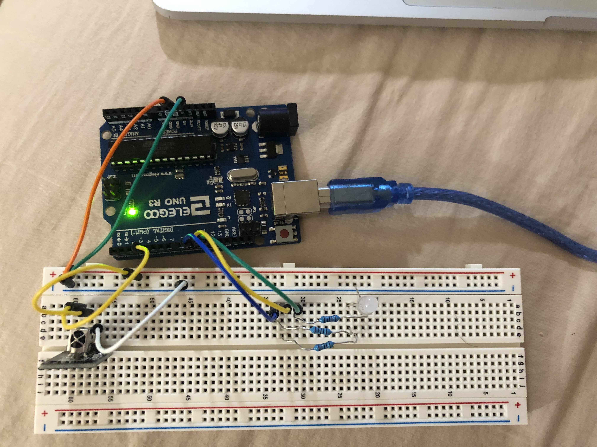

Circuits

Here is all the documentation for assignment 4!
The circuit receives the remote signial using a receiver and turn the RGB LED into different color.
The maximum current can flow in the circuit is 20mA and the votalge when pin output is high is 5V. The voltage drop for
green LED is 1.8V
and 3.3V for blue and white LEDs. So the voltage left for green LED is 3.2V and 1.7V for blue and
white LEDs. With the maxium current, the
reistor needed for the circuit is calcultated as 160Ω and 85Ω respectively. The
one I chose is the 220 resistor, which is good for this
circuit since higher than the resistant needed.
//#define INFO // To see valuable informations from universal decoder for pulse width or pulse distance protocols
#include <Arduino.h>
#define DECODE_NEC // Includes Apple and Onkyo
#include <IRremote.hpp> // Includes the irremote library
// initialize the pins
int IR_RECEIVE_PIN = 3;
int blue = 9;
int green = 10;
int red = 11;
//initiazlize a variable to check the status
int led = 0;
void setup() {
Serial.begin(115200);
// Start the receiver and if not 3. parameter specified, take LED_BUILTIN pin from the internal boards definition as default feedback LED
IrReceiver.begin(IR_RECEIVE_PIN, ENABLE_LED_FEEDBACK);
// set the pin to input
pinMode(3, INPUT);
// initialize the LED pins as outputs
pinMode(9, OUTPUT);
pinMode(10, OUTPUT);
pinMode(11, OUTPUT);
}
void loop() {
/*
* Check if received data is available and if yes, try to decode it.
* Decoded result is in the IrReceiver.decodedIRData structure.
*
* E.g. command is in IrReceiver.decodedIRData.command
* address is in command is in IrReceiver.decodedIRData.address
* and up to 32 bit raw data in IrReceiver.decodedIRData.decodedRawData
*/
if (IrReceiver.decode()) {
// dispatch execution to different parts of code based on the value of the expression
switch(IrReceiver.decodedIRData.command){
// if press the power button
case 0x45:
// if the value led is 0
if (led == 0){
// turn the led on
analogWrite(red,255);
analogWrite(green,255);
analogWrite(blue,255);
// set the value to 1
led = 1;
}
// if not equals to 0
else{
// turn the led off
analogWrite(red,0);
analogWrite(blue,0);
analogWrite(green,0);
// set the value equals 0
led = 0;
}
break;
// if press the 0 button
case 0x16:
// if the value led is 1 (led is on)
if (led == 1){
// set the led to a color
analogWrite(red,255);
analogWrite(green,0);
analogWrite(blue,0);
break;
}
// if press the 1 button
case 0xC:
// if the value led is 1 (led is on)
if (led == 1){
// set the led to a color
analogWrite(red,255);
analogWrite(green,127);
analogWrite(blue,0);
break;
}
// if press the 2 button
case 0x18:
// if the value led is 1 (led is on)
if (led == 1){
// set the led to a color
analogWrite(red,255);
analogWrite(green,255);
analogWrite(blue,0);
break;
}
// if press the 3 button
case 0x5E:
// if the value led is 1 (led is on)
if (led == 1){
// set the led to a color
analogWrite(red,0);
analogWrite(green,255);
analogWrite(blue,0);
break;
}
// if press the 4 button
case 0x8:
// if the value led is 1 (led is on)
if (led == 1){
// set the led to a color
analogWrite(red,0);
analogWrite(green,255);
analogWrite(blue,255);
break;
led = 1;
}
// if press the 5 button
case 0x1C:
// if the value led is 1 (led is on)
if (led == 1){
// set the led to a color
analogWrite(red,0);
analogWrite(green,0);
analogWrite(blue,255);
break;
}
// if press the 6 button
case 0x5A:
// if the value led is 1 (led is on)
if (led == 1){
// set the led to a color
analogWrite(red,255);
analogWrite(green,0);
analogWrite(blue,255);
break;
}
}
IrReceiver.resume(); // Enable receiving of the next value
}
}